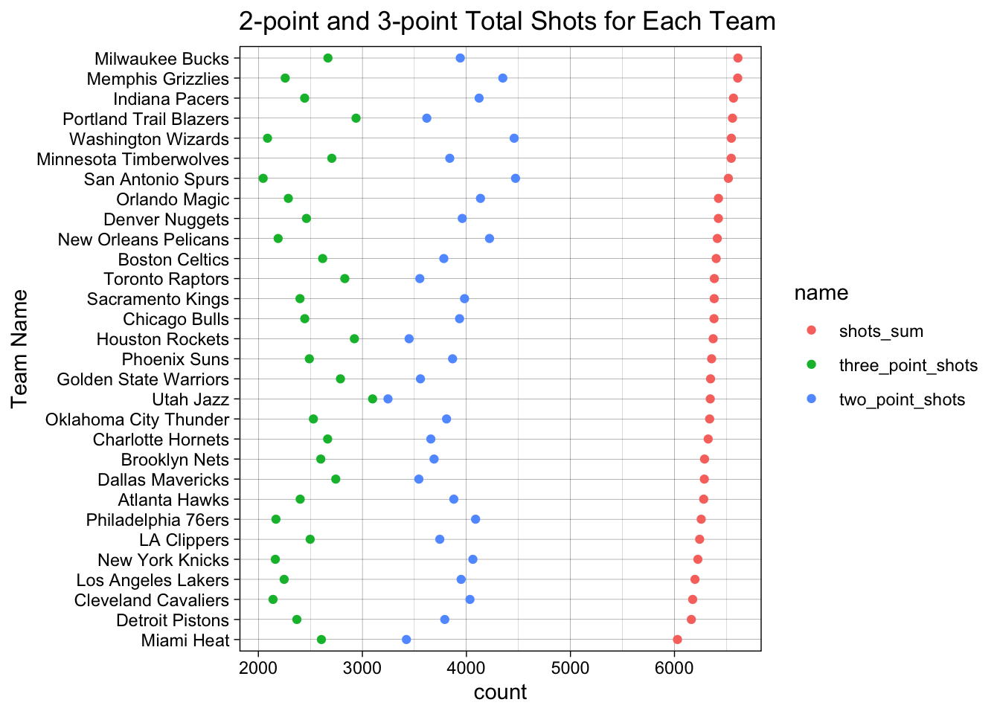
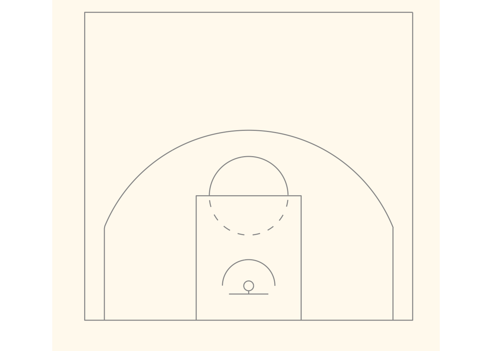
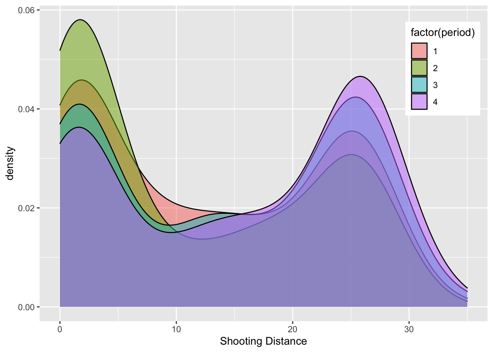
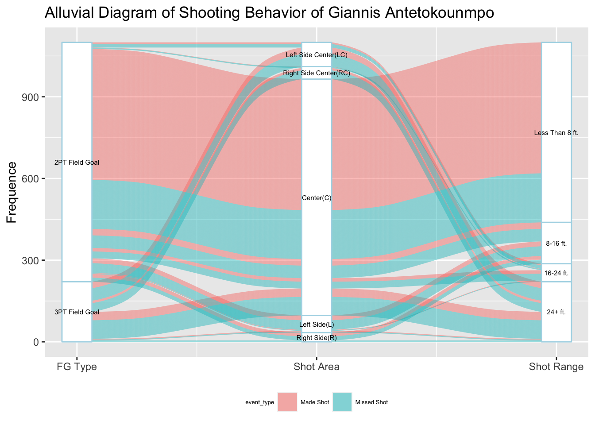
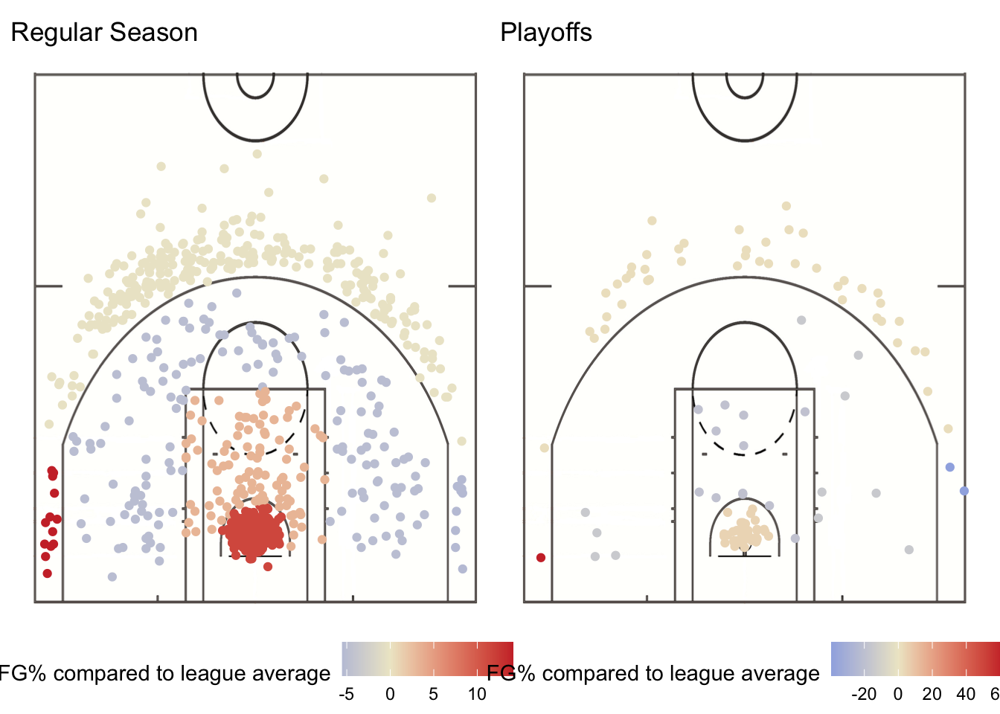
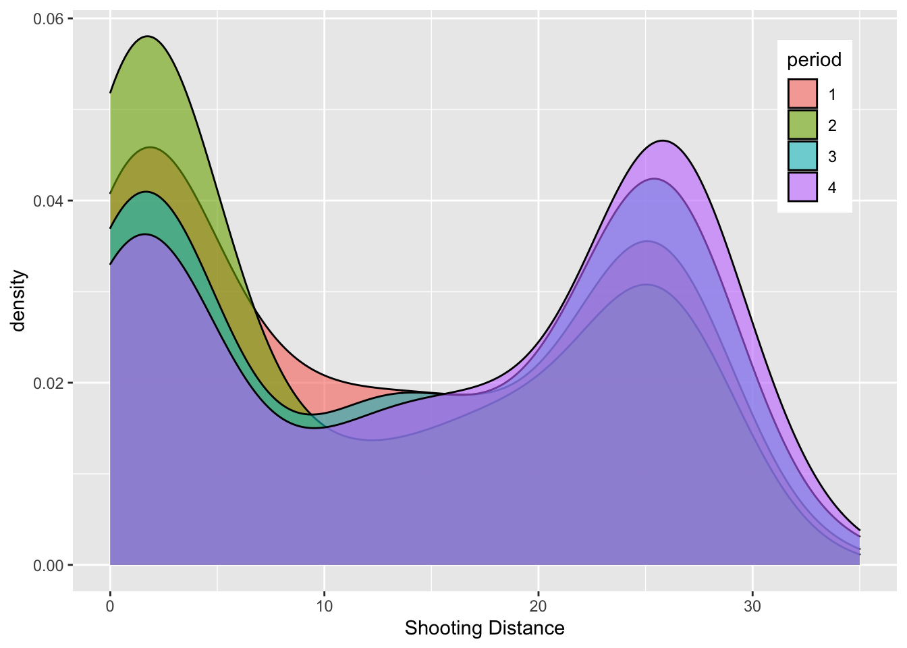

Chapter 5 Results
In this chapter, we will our process to come up with the answers and our conclusions to each of the questions we proposed in the introduction section. Here are our questions proposed in the introduction chapter:
On League Level We will give a overall glance at the dataset of last season to have a basic understanding on the shooting behaviors.
On Team Level Basketball is a team-played game and each team has its own style and culture. From the perspective of team, we are going to look for some differences between shooting behaviors preferences and learn the relationship between the shooting patterns and period, field goal percentage, etc.
On Player Level We choose three most popular players, Stephen Curry, Lebron James and Giannis Antetokounmpo to investigate their shooting choices and look at how other variables could influence their shooting decision such as in differnet periods of game.
5.1 League Shooting Pattern Analysis
Firstly we will look at the distribution of distance of shots by the entire league.

From the density histogram, we can see that the distribution of shot distance has two apparent peaks. Most shots are made around distance of 0 inch and 25 inches. According to the Ridgeline Plots, we can conclude that the shots made around 0 inch distance are in the restricted area, and the shots made around 25 inch distance are all kinds of 3-point shots. This graph shows that the modern basketball tends to shoot less mid-range and try to maximize points per play because the shooting percentage always gets higher when player approaches the basketball.
 Then we take a look at the relationship between shot distance and it is obvious that missed shots have higher distance which makes sense to us because it is always harder to make a long-distanced shot than a short-distanced one.
Then we take a look at the relationship between shot distance and it is obvious that missed shots have higher distance which makes sense to us because it is always harder to make a long-distanced shot than a short-distanced one.
Then we can use boxplot to explore the distribution of shots made and missed on different zones based on minutes remaining in the period.

From this boxplot, surprisingly, except Back Court shots (which sometimes only happen when there is no time remaining), the distribution of missed shots are almost the same between different zones. However, the distribution of shots made in different zones varies.

d98a13c70680d94d272e320a09e395cf5a3689fe
5.2 Team Shooting Pattern Analysis
Although in previous section, we realized that there is no striking difference in total number and FG% for 2-point and 3-point shots in each period for the entire league, we somewhat expect this shooting pattern to differ team by team. Firstly, to get a general understanding of how many 2-point and 3-point shots each team attempted for season 2020-21, we create a Cleveland Dot Plot as follows:

From the Cleveland Dot Plot, we can see that the total shots made by each team for the entire season doesn’t vary a lot, ranging from around 6000 to 6500. However, for different teams, they have different preference for 2-point shots and 3-point shots. For example, Utah Jazz has almost same counts for 2-point shots and 3-point shots with the most 3-point shots in the league. On the contrary, San Antonio Spurs has least count of 3-point shots and most count of 2-point shots in the league. Therefore, we can conclude that teams vary significantly on their choice for making 2-point or 3-point shots.
After generally seeing the preference of different teams, now we can explore the movement of preference for 2-point shots and 3-point shots period by period. To see the preference change, here we calculate the percentage of 3-point shots among all shots made in each period for each team. If the percentage increase, it means that the team prefer to make more 3-point shots.

(Here Each color represents one team. The percentage represent the percentage of 3-point shots of total number of shots attempted each period. The first axis means 1st period, and so on.)
From the graph we can see that, indeed, most of the teams will have different preference for 2-point and 3-point shots regarding to different periods of a game. For example, Brooklyn Nets experienced largest change in the percentage of 3-point shots among other teams: at 1st period, it has percentage between 40% and 35%, and during the 2nd period, the percentage decreased to 35% - 40%. Then during 3rd period, the percentage increased to 40%-45% and finally reached 45%-50% at the 4th period.
A general trend is that, as the game approaches to 4th period, teams tend to make more 3-point shots compared to their performance in 1st period.
After getting a general understanding of types and shots attempted for each team, now we want to focus on the Field Goal Percentage (\(\frac{\text{ total shots made}}{\text{total shots attempted}}\)).
Here we will use diverging bar chart to compare the Field Goal % for 2-point and 3-point shots for each team, ordering by Field Goal % for 3-point shots: 
From the plot, we can see that, generally, 3-point Field Goal is less than 2-point Field Goal, which makes sense because 3-point shots are harder to score regarding to the distance.
It is difficult to see if the FG% for 2-point or 3-point corresponds to the team’s preference. Based on our previous conclusion, Utah Jazz has the most number of 3-point shots attempted, and San Antonio Spurs were concluded as the team least preferring 3-point shots. However, the FG% for 3-point shots are not highest for Utah Jazz and not lowest for San Antonio Spurs. This situation may be affected by the fact that, since the team prefer 3-point shots, so they make more, and they miss more, so the FG% decreases.
5.3 Individual Player Analysis
5.3.1 Shooting behavior of Stephen Curry
As a ground-breaking player, Stephen Curry showed the world how explosive his scoring ability was and he is making a NBA record of three pointers made while this project is getting done. Analyzing his shooting behavior would be a great angle to start.

These two plots use a graph of basketball court to visualize the performance of Stephen Curry at each point on the court and it divides the court to multiple zones. The color in the left graph indicate the total number of shots made by Stephen Curry, the color in the right graph indicates the field goal percentage of Stephen Curry in that specific zone comparing to the average level of the league. It is red if the player shoots above the league average and blue if lower than league average.
In the plot above, we could first notice that Stephen Curry tries most of his shots in the paint (a rectangle area nearest to the basket) and out of three-point line. Again, this shooting behavior is a classical example of modern basketball: try less on mid-range shot. Another characteristic of his shooting is the range of his threes. We could even see multiple hexagons even 7 feet further away from the three-point line, which makes it harder to guard him.
On the other hand, we could still see that Stephen has his weakness, which is left corner. His left-corner threes are deep blue so it would be a great strategy to limit him to shoot at that place. However, I think he is able to develope becasue he shoots very well on the other corner.
5.3.2 Shooting pattern in playoffs of LeBron James
We could always say that games of regular season do not really matter because being a championship depends on the performance in playoffs. So many top players choose to take as many rest as they can in regular season so that they could save more energy for the playoffs. Therefore, it would be great if we can find some differences of shooting behavior in regular season and playoffs. As a die-hard Lakers fan, I would choose to analyze LeBron James.

By looking at the regular season shot chart on the left, it is obvious that LeBron did fantastic in the paint, which shows that his advantage near the basketball still exists. In contrary, he also tried a lot mid range shots and threes but the results was not ideal, except that his shooting percentage on the left corner is extremely high, where by chance Stephen Curry was not good at.
Comparing the performance in regular season and playoffs, we could see that although LeBron James still did better than average in the semi-circle area under the basket, his shooting significantly declined in that area. It might be the reason why Lakers in this season did not make it to the finals. Moreover, he still behaved well on the left corner in playoffs than the other one so the defending strategy against LeBron should be opposite to Stephen Curry.
5.3.3 Analysis on shooting behavior in different periods of LeBron James
Every basketball game has four periods and athletes would get exhausted when game is getting to the end, so it is important to arrange the rest and the rush hour properly. Therefore, let us take a look at the shooting behavior of LeBron James in different periods and hope to find some special patterns in it.

Based on the plot, LeBron James prefers attacking the tim to shooting long-distance in the second quarter and among four periods it is last one that he attempted most threes. Therefore, there is one more defending policy against LeBron should be focusing more on his layups in the first half and his threes in the second half.
5.3.4 Shooting Behavior of Giannis Antetokounmpo
Giannis Antetokounmpo, AKA Greek Freak, was experiencing his best seasons in past two years. MVP winner, All-star and last but not least, NBA championship. His athleticism is so phenomenol such that he could win all even without good shooting ability. While in the shock by shooting ability of Stephen Curry, let us take a look at Giannis Antetokounmpo, another side of basketball.
Based on this alluvial diagram, we could see that Giannis Antetokounmpo in this season spent most his attempts on 2 pointers and two thirds of his shots happened less than 8 feet away from the basket. As a right-handed player, it seems like that he does not have preference on which side to shoot. Moreover, after comparing the shot attempted at left side center and right side center, we could find that he approached the rim more often from the left although he is right-handed. This might be inspirational to his defenders that it is better to focus on his left hand. At last, in his fewer long-distance attempts, he did not very well because we could see more blue flow in the long-distance area. Therefore, he still have a lot of potential to stimulate and there are more accomplishment waiting for him if he could work on his weakness.